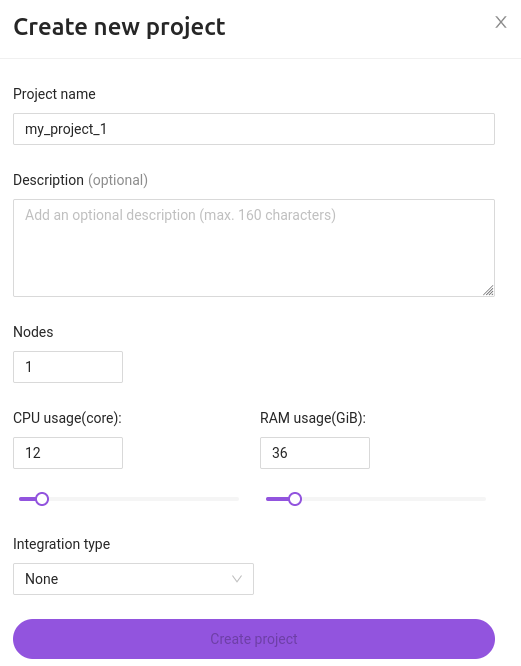
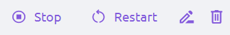

О BondiFuzz
BondiFuzz - DAST platform
BondiFuzz — это платформа динамического стресс-тестирования продуктов методом фаззинга, путем быстрой интеграции в существующий CI.
Какие проблемы решает BondiFuzz?
- Автоматизированный поиск и раннее обнаружение ошибок ПО, в т.ч. уязвимостей.
- Улучшение надежности кода продукта на выходе.
- Помощь в автоматизации покрытия кода тестами для облегчения и удешевления процесса разработки.
- Быстрый старт процесса фаззинга:
- автоматическая оценка технической критичности уязвимости;
- автоматический менеджмент ресурсов для различных фаззинг решений.
Почему BondiFuzz?
Динамическое тестирование методом фаззинга все популярнее, но для многих это видится трудозатратным, так как некоторые инструменты до сих пор выглядят больше как хакерские утилиты. Наша команда активно проводила и проводит аудит безопасности различных продуктов и реализовала свой опыт в предоставляемой платформе.
Интеграция в процесс разработки
Интеграция данного решения в процесс разработки позволит существенно увеличить надежность продукта, так как постоянное тестирование методом фаззинга с достаточным уровнем покрытия кода разработчиками имеет накопительный эффект.
Решение для разных отделов
BondiFuzz может использоваться разными командами, не только ИБ, но и разработки или QA:
-
Разработка — более быстрое и самостоятельное обнаружение ошибок и готовые данные для юнит-тестов. Разработчику приходит уведомление, он исправляет ошибку и запускает тест для исправленного кода;
-
QA — ещё один шаг к повышению производительности, заключается в автоматическом создании юнит-тестов из полученных результатов фаззинга и дополнительному виду тестированию;
-
ИБ — автоматический анализ критичности обнаруживаемых ошибок и автоматический менеджмент ресурсов для различных фаззинг решений.
*Сообщения о возникающих проблемах в работе с BondiFuzz, а также предложения и идеи по улучшению, присылайте по адресу support@bondifuzz.com.
Начало работы
Перед началом работы необходимо пройти аутентификацию. Для этого необходимо ввести логин пользователя и его пароль, полученные от администратора BondiFuzz, затем пароль можно изменить в настройках аккаунта. После успешной аутентификации пользователь будет перенаправлен на страницу с фаззерами.
Рабочие вкладки
В веб-интерфейсе BondiFuzz есть следующие вкладки:
Projects — созданные пользователем проекты и проект default, который создается по-умолчанию при создании пользователя.
Fuzzers — созданные пользователем фаззеры. Пользователь загружает фаззинг-тесты, может запускать и останавливать их, добавлять новые версии, удалять.
FAQ — часто задаваемые вопросы.
Documentation — документация по работе с BondiFuzz.
Trash — корзина, куда перемещаются удаленные фаззинг-тесты.
Во вкладке Fuzzers есть следующие вкладки:
Versions — после каждого внесения изменения в фаззинг-тест пользователь может создавать новую версию, затем можно сравнить работу разных версий одного фаззинг-теста, а также эта возможность поможет вернуться к предыдущей версии, если изменения оказались неудачными.
Crashes — крэши, обнаруженные фаззинг-тестами, с возможностью сортировки по версии.
Statistics — статистика, собираемая на основе работы фаззинг-тестов. Показывает метрики фаззинг-тестов, по которым оценивается эффективность их работы. Есть возможность выбора версии фаззинг-теста и временного промежутка, за который необходима статистика.
Для фаззинга понадобятся следующие файлы:
Binaries — бинарный файл фаззинг-теста.
Seeds — директория с файлами, содержимое которых должно быть валидным с точки зрения целевой программы или функции. Сиды будут подвергаться многочисленным мутациям в процессе фаззинга и приводить к росту покрытия кода. В процессе фаззинга сиды трансформируются в корпус. Корпус (corpus) — это набор тест-кейсов, которые привели к росту покрытия кода во время фаззинга целевой программы или функции. В корпусе сначала содержатся сиды, потом — их мутации, затем — мутации мутаций и т.д.
Options and environment — дополнительные опции.
Image — докер-образ агента. Агент — это программа, которая запускается первой при запуске контейнера и запускает сам фаззинг-тест. Агент собирает результаты фаззинга и статистику. На данный момент этот файл загружается администраторами BondiFuzz.
Проекты
BondiFuzz предполагает создание проектов, внутри которых будут создаваться фаззеры, а в фаззеры будут загружаться созданные пользователем фаззинг-тесты. Это упрощает организацию работы. Изначально пользователю доступен проект по-умолчанию default, далее пользователь сможет создать свои проекты.
При создании и при редактировании проекта можно создать интеграцию проекта с трекерами задач. В таком случае обнаруженные загруженным в BondiFuzz фаззинг-тестом ошибки будут передаваться в трекер задач. Это упрощает взаимодействие команды безопасности и команды разработки.
Создание проекта
-
Во вкладке
ProjectsнажмитеAdd a new project. -
Введите название проекта.

Название проекта должно быть уникальным.
-
Описание проекта опционально.
-
Укажите количество нод, количество CPU и размер памяти.
Значение CPU в проекте измеряется в количестве ядер, и может принимать следующие значения: 2, 4, 6, 8, 10, 12, 14, 16, 20, 24, 28, 32, 36, 40, 44, 48, 52, 56, 60, 64, 68, 72, 76, 80, 84, 88, 92, 96 (зависит от ограничений облачной платформы).
Значение RAM в проекте измеряется в GiB и равно значению CPU, умноженному на коэффициенты от 1 до 16, но не может быть более 640 GiB.
- В случае, если необходима интеграция с трекером задач, выберите подходящий в выпадающем списке. Интеграцию можно создать для уже имеющегося проекта нажав кнопку
Editи перейдя во вкладкуIntegrations.
Интеграция с баг-трекерами
BondiFuzz предполагает возможность интеграции с трекерами Jira и YouTrack.
При обнаружении фаззинг-тестом крэша будет создаваться issue в трекере.
Интеграция с трекером задач Jira
Для интеграции с Jira при создании проекта необходимо в выпадающем списке выбрать необходимый тип интеграции.

Перед созданием интеграции необходимо создать проект в трекере задач.
Приоритет и тип issue задаются пользователем в соответствии с приоритетами и типами, которые есть в трекере.
После создания проекта в BondiFuzz необходимо загрузить фаззинг-тест и запустить его. В случае, если фаззинг-тест обнаружит крэш, в Jira будет создано issue с подробным описанием. Если фаззинг-тест найдет дубликаты крэша, то issue изменится автоматически.
Есть возможность редактирования ранее созданной интеграции. При смене Jira-проекта крэши, которые уже были обнаружены фаззинг-тестом, останутся в старом проекте и там же будет информация о дубликатах крэшей. В новом проекте будут только новые крэши.
Интеграция с трекером задач YouTrack
Для интеграции с YouTrack при создании проекта необходимо в выпадающем списке выбрать необходимый тип интеграции.

Перед созданием интеграции необходимо создать проект в трекере задач.
Идентификация пользователя происходит по токену, создаваемому в YouTrack-е.
Есть возможность редактирования ранее созданной интеграции. Также как и с Jira, при смене YouTrack-проекта крэши, которые уже были обнаружены фаззинг-тестом, останутся в старом проекте и там же будет информация о дубликатах крэшей. В новом проекте будут только новые крэши.
Удаление проекта
Проект можно удалить нажав кнопку Delete.
На всплывающем окне необходимо выбрать одно из действий:

Move to Trash— перенести проект в корзину, где он будет находиться 30 дней c возможностью восстановления, после чего будет удален полностью.
Можно нажать Cancel на нотификации Project is being deleted, чтобы отменить удаление.
Удаленные проекты можно найти во вкладке Deleted.
Для восстановления удаленного проекта необходимо нажать кнопку Restore.
Delete Permanently — удалить полностью, без возможности восстановления.
У пользователя есть возможность полностью очистить корзину с проектами, нажав кнопку Empty user bin.
Это действие также можно отменить, нажав Cancel на нотификации. Удаленное не подлежит восстановлению.
Фаззеры
BondiFuzz предполагает загрузку заранее созданных фаззинг-тестов в формате бинарных файлов.
Для удобства отслеживания изменений есть возможность загружать разные версии одного и того же фаззинг-теста.
Создание фаззера
Для создания фаззера во вкладке Fuzzers нажмите кнопку +Fuzzer.
- Введите название фаззера.

Название должно быть уникальным.
-
Описание фаззера опционально.
-
Выберите язык программирования, на данный момент доступны
Go,C++,RustиPython.

-
Выберите тип фаззера.
-
Выберите образ (на данный момент образы может загружать только администратор, есть возможность создать запрос на необходимый образ).

-
Установите значения CPU, RAM и tmpfs (максимальные значения приведены для проекта по-умолчанию, в собственных проектах они могут отличаться).
Значение CPU измеряется в mcpu и может быть от 500 до 2000.
Значение RAM измеряется в MiB и может быть от 500 до 5000.
Значение tmpfs измеряется в MiB и может быть от 100 до 2000.
- Загрузите следующие файлы:
- бинарный файл фаззинг-теста;
- сиды — набор входных данных для фаззинг-теста (не является обязательным);
- конфигурационный файл — файл с дополнительными опциями (не является обязательным).
- После загрузки фаззинг-тест можно запускать, останавливать и перезапускать.


Перезапуск фаззинг-теста означает обнуление его состояния, но при этом собранные им креши, статистика и корпуса сохраняются.
- Статусы фаззинг-теста могу быть следующие:
Unverifying— фаззинг-тест еще не загрузился полностью.Verifying— проверка загруженных файлов.Running— фаззинг-тест запущен и работает в штатном режиме.Interrupted— фаззинг-тест остановлен из-за ошибок в работе.Stopped— фаззинг-тест остановлен.
Возможные состояния фаззинг-теста:
Ok— фаззинг-тест работает без ошибок.Warning— предупреждение о том, что есть неполадки в работе фаззинг-теста.Error— ошибка в работе фаззинг-теста, из-за которой он не может дальше работать.
Возможные сочетания статусов и состояний:
Unverifying Ok— файлы фаззинг-теста загружаются в штатном режиме.Verifying Ok— проверка фаззинг-теста идет в штатном режиме.Unverifying Error— пользователь неправильно написал конфигурационный файл, BondiFuzz не может распознать его содержимое.Verifying Ok— статус и состояние фаззинг-теста после исправления конфигурационного файла и перезапуска.Running Ok— фаззинг-тест запущен и работает.Running Warning— фаззинг-тест долго работал, предполагается, что уже обнаружены все возможные ошибки.Stopped Warning— фаззинг-тест слишком долго работал, дальнейшая трата ресурсов на его работу не имеет смысла.
При наведении курсора на Warning и Error выводится описание возникшей проблемы.
- Добавление новой версии фаззинг-теста.
Для обновления фаззинг-теста не обязательно изменять тот, который уже был запущен в BondiFuzz. Можно добавить новую версию фаззинг-теста. Также это позволит сравнить результаты работы всех загруженных версий одного фаззинг-теста. Для этого во вкладке Fuzzers в правом верхнем углу нажмите кнопку Add version.
Название версии формируется автоматически — по времени и дате ее создания. Это название можно изменить, описание опционально.

В одном фаззере может быть запущена только одна версия фаззинг-теста. Версии разных фаззинг-тестов могут быть запущены одновременно.
Создание конфигурационных файлов для фаззинг-тестов
Конфигурационный файл — это загружаемый в BondiFuzz вспомогательный файл, в котором указываются дополнительные опции, необходимые для правильной работы фаззинг-теста.
Содержимое конфигурационного файла фаззинг-теста на основе AFL
Пример конфигурационного файла фаззинг-теста на основе AFL:
{
"target": {
"path": "url-fuzz-target",
},
"env": {
"MY_ENV": "val"
},
"options": {
"afl": {
"min_length": 50,
}
}
}
target — путь к бинарному файлу фаззинг-теста.
Возможные опции:
mode — режимы работы AFL. В BondiFuzz на данный момент поддерживается только режим Normal.
schedule — алгоритмы оценки входных данных, чтобы понять что лучше дальше мутировать чтобы быстрее получить входные данные, увеличивающие покрытие. Более подробно.
dict — словарь, значения из которого будут использоваться иногда вместо случайной мутации.
file_extension — если бинарный файл фаззинг-теста принимает на вход в качестве аргумента путь к файлу, то можно указать какое расширение должно быть у этого файла.
min_length — минимальная длина входных данных.
max_length — максимальная длина входных данных.
queue_selection — все входные данные в AFL находятся в очереди, опция дает возможность выбирать либо поочередно либо согласно весам.
python_module — AFL позволяет написать модуль на языке Python, затем использовать его как мутатор. Более подробно.
custom_mutator_library — кастомная библиотека, которая будет использоваться как мутатор. Более подробно.
custom_mutator_only — все вызовы на мутации будут обрабатываться указанными выше библиотекой/Python-модулем.
hang_timeout — граница после которой входные данные считаются hang'ом.
map_size — размер "массива" хранящего информацию по покрытию фаззинг-тестом кода.
Предзагрузка библиотек для AFL
AFL_PRELOAD — способ подгрузить библиотеку к запускаемому файлу. AFL_PRELOAD необходим когда фаззинг-тест использует внешние зависимости, для загрузки библиотек по указанному в нем пути. Пример:
AFL_PRELOAD=/path/to/libcompcov.so
Содержимое конфигурационного файла LibFuzzer-а
Пример конфигурационного файла для LibFuzzer-а:
{
"target" : {
"path": "my_binary",
}
"env": {
"MY_ENV": "val"
},
"options": {
"libfuzzer": {
"max_len": "512"
},
}
}
target — путь к бинарному файлу фаззинг-теса.
Возможные опции:
max_len — максимальная длинна входных данных.
dict — файл словаря, который используется в качестве сидов.
prefer_small — если значение равно 1, выбор меньших входных данных.
timeout — временная задержка, значение указывается в секундах.
report_slow_units — пороговое значение, при достижении которого входные данные будут интерпретироваться как не валидные.
only_ascii — если значение равно 1, входные данные только в формате ASCII.
detect_leaks — если значение равно 1, предпринимается попытка определения утечек памяти.
len_control — указывает скорость, с которой увеличивается предел длины.
mutate_depth — количество мутаций для входных данных.
Больше опций можно найти по ссылке.
Предзагрузка библиотек для LibFuzzer-а
Прелоады для добавления библиотек:
LD_PRELOAD — способ подгрузить библиотеку к запускаемому файлу. LD_PRELOAD необходим когда фаззинг-тест использует внешние зависимости, для загрузки библиотек по указанному в нем пути. Пример:
LD_PRELOAD": "./libs/libarchive.so.13 ./libs/libicudata.so.60 ./libs/libicuuc.so.60 ./libs/liblzo2.so.2 ./libs/libxml2.so.2
Для того чтобы не указывать все библиотеки можно использовать LD_LIBRARY_PATH, указав в качестве значения путь до директории, где лежат все необходимые для файла библиотеки. Пример:
LD_LIBRARY_PATH": "./libs
Пример создания фаззинг-теста Libfuzzer
В качестве примера возьмём фаззинг-тест для известной уязвимости Heartbleed из Fuzzer Test Suite. (См. приложение)
Бинарный файл
После компиляции получаем непосредственно файл фаззинг-теста. Фаззинг-тест будет назван по-умолчанию, но для последующего удобства это имя можно изменить на target.
BondiFuzz предполагает загрузку файлов фаззинг-теста в виде архива.
cd path_to_fuzzer
tar -czf binaries.tar.gz openssl-1.0.1f-fsanitize_fuzzer runtime
В случае с Heartbleed в архив нужно поместить папку с файлами ключей.
Конфигурационный файл
В ферму также можно загрузить конфигурационный файл config.json с дополнительными опциями.
{
"target" : {
"path": "openssl-1.0.1f-fsanitize_fuzzer"
}
"options": {
"libfuzzer": {
...
}
}
}
Файлы с сидами
Сиды — набор входных данных для фаззинг-теста — нужно добавить в архив, не помещая их в директорию.
cd path_to_seeds
tar -czf seeds.tar.gz seed1 seed2
Запуск фаззинг-теста
Эти файлы необходимо загрузить в BondiFuzz, предварительно выбрав образ из доступных на данный момент.
Работа с фаззинг-тестами в BondiFuzz
Фаззинг в BondiFuzz начинается с загрузки ранее созданных архивов tar.gz (бинарный файл фаззинг-теста, дополнительные файлы и сиды) и конфигурационного файла. Обязателен только бинарный файл, необходимость в других файлах зависит от используемого фаззинг-движка.
После загрузки файлов происходит проверка правильности форматов загруженных файлов и валидности json-файла. В этот момент фаззинг-тест находится в состоянии Unverified OK. Для начала проверки необходимо кликнуть кнопку Start, и фаззинг-тест будет перенаправлен в очередь из еще не проверенных фаззинг-тестов. Эта очередь приоритетная над основной очередью, т.е. если есть фаззинг-тесты, которым надо пройти проверку, они будут запускаться в первую очередь.
Сначала фаззинг-тест запускается с режимом запуска firstrun, т.е. с ограничением количества запусков — 10000 раз. Это необходимо для того, чтобы убедиться, что загруженный бинарный файл валидный. Если в этом режиме фаззинг-тест успел найти крэш, то в выводе будет упомянут и крэш. Если обнаружатся ошибки при запуске фаззинг-теста, пользователь будет проинформирован о них.
Далее фаззинг-тест попадает в общую очередь и будет запущен в обычном режиме.
В BondiFuzz есть внутренняя система оценки актуальности фаззинг-тестов — каждому присваивается свой вес. В случае, если фаззинг-тест находит крэши новые и/или у него растёт покрытие, вес увеличивается. При увеличении веса фаззинг-тест начинает чаще запускаться, а чем чаще он запускается, тем быстрее будут найдены крэши и/или увеличится покрытие кода.
Если же фаззинг-тест работает долго без обнаружения крэшей/увеличения покрытия — его вес постепенно уменьшается. Также вес будет уменьшаться, если фаззинг-тест будет обнаруживать только дубликаты крэшей, а не новые.
Загрузка фаззинг-теста в BondiFuzz
Для понимания процесса работы в BondiFuzz рекомендуем взять уже готовый фаззинг-тест, который точно найдет ошибки.
Загрузка файлов в BondiFuzz
BondiFuzz предполагает загрузку бинарного файла, сидов, если они есть, и конфигурационного файла, при необходимости.
Бинарный файл
После компиляции мы получаем непосредственно бинарный файл фаззинг-теста. Этот файл для удобства можно назвать target.
BondiFuzz предполагает загрузку файлов фаззинг-тестов в виде архива.
cd path_to_fuzzer
tar -czf binaries.tar.gz fuzzgoat
Конфигурационный файл
В BondiFuzz также можно загрузить конфигурационный файл config.json с дополнительными опциями.
{
"target" : {
"path": "target",
}
"env": {
"MY_ENV": "val"
},
"options": {
"libfuzzer": {
"max_len": "512"
},
}
}
Файлы с сидами
Сиды для фаззинг-теста необходимо добавить в архив не помещая их в директорию.
cd path_to_seeds
tar -czf seeds.tar.gz seed1 seed2
Запуск фаззинг-теста в BondiFuzz
Созданные файлы необходимо загрузить в BondiFuzz, предварительно выбрав образ из доступных на данный момент согласно той среде, в которой фаззинг-тест был создан и проверялся локально.
Удаление фаззера
Чтобы удалить фаззер, перейдите во вкладку Fuzzers, выберите необходимый фаззер и нажмите кнопку Delete.
На всплывающем окне необходимо выбрать одно из действий:

Move to Trash— перенести фаззер в корзину, где он будет находиться 30 дней c возможностью восстановления, после чего будет удален полностью.
Можно нажать Cancel на уведомлении Version sent to trash, чтобы отменить удаление.
Delete Permanently— удалить полностью, без возможности восстановления.
Пока уведомление Version is permanently deleted видно, вы можете нажать Cancel, чтобы отменить удаление.
Удаление версий фаззинг-тестов происходит аналогично.
Версию фаззинг-теста, перемещенную в корзину, можно восстановить в течение 30 дней. Для этого необходимо перейти во вкладку Trash, слева выбрать версию фаззинг-теста, которую необходимо восстановить, навести курсор и нажать Restore. Появится уведомление Version is restoring, предоставляющее возможность отменить восстановление из корзины.
Также можно полностью удалить версию из корзины без возможности восстановления нажав кнопку Delete. На появившемся уведомлении Version is permanently deleted можно нажать Cancel, чтобы отменить удаление, и версия останется в корзине.
Помимо удаления отдельных версий фаззинг-тестов из корзины, есть возможность удалить навсегда версии, относящиеся к одному фаззеру.
Можно навсегда удалить все версии фаззеров, относящиеся к определенному проекту. Для этого необходимо перейти во вкладку Trash, нажать Empty project bin и подтвердить свое действие.
Работа с CLI утилитой bondi-python
Установка CLI утилиты
Длы работы потребуется Python 3.7 и выше.
Склонируйте проект:
git clone https://github.com/bondifuzz/bondi-python.git
Установите при помощи pip:
pip install bondi-python
После установки запустите с командой --help:
bondi --help
Автодополнение вводимых команд можно подключить при помощи дополнительного фреймворка командой:
bondi --install-completion
Конфигурация (config)
Инициализация подключения к серверу:
bondi config init
Необходимо ввести URL сервера, имя пользователя и пароль.
Server url: https://demo.bondifuzz.com
Username: username
Password: ***
OK - Initialization successful
Подлючение можно обновить командой:
bondi config set username user_1
OK - Config updated successfully
Получение информации об уже установленном подключении:
bondi config show
-------- ------------------
url demo.bondifuzz.com
username **************name
password **************4321
-------- ------------------
Получение URL сервера, к которому установлено подключение:
bondi config get url
https://demo.bondifuzz.com
Получение имени пользователя, аккаунт которого подключен к серверу:
bondi config get username
Работа с проектами
Создание проекта:
bondi projects create
Необходимо указать название проекта (название должно быть уникальным), значения CPU и RAM. Проекту автоматически присваивается уникальное id.
Name: project_1
Node cpu: 40
Node ram: 360
---- ---------
id 10550740
name project_1
---- ---------
Значение CPU в проекте измеряется в количестве ядер, и может принимать следующие значения: 2, 4, 6, 8, 10, 12, 14, 16, 20, 24, 28, 32, 36, 40, 44, 48, 52, 56, 60, 64, 68, 72, 76, 80, 84, 88, 92, 96. Для упрощения выбора значения можно воспользоваться клавишей Tab.
Значение RAM в проекте измеряется в GiB и равно значению CPU, умноженному на коэффициенты от 1 до 16, но не может быть более 640 GiB. Для упрощения выбора значения можно воспользоваться клавишей Tab.
Получение информации о проекте:
bondi projects get 10550740
Необходимо указать id проекта или его название.
----- ---------
Project name project_1
Description Default project
Pool status Ready
Node group CPU per node: 4 cores, RAM per node: 8GB, Node count: 1
Pool resources CPU in total: 3720 mcpu, RAM in total: 5714MB, Nodes ready: 1
----- ---------
Получение списка проектов с присвоенными id и описаниями:
bondi projects list
+----------+--------------+------------------+
| id | name | brief |
|----------+--------------+------------------|
| 10550740 | project_1 | My first project |
| 9845728 | project_2 | No description |
| 8953832 | project_3 | No description |
| 2755294 | default | Default project |
+----------+--------------+------------------+
Изменение названия проекта:
bondi projects update --id 10550740 --new-name project_2
В таблице выводится предыдущее название проекта и новое.
+------------+-----------+-----------+
| Property | Old | New |
|------------+-----------+-----------|
| name | project_1 | project_2 |
+------------+-----------+-----------+
Изменение описания проекта:
bondi projects update --id 10550740 --new-description no description
В таблице выводится предыдущее описание проекта и новое.
+-------------+-------+----------------+
| Property | Old | New |
|-------------+-------+----------------|
| description | none | no description |
+-------------+-------+----------------+
Для удобства работы есть возможность установить текущий проект как проект по умолчанию, в таком случае не будет необходимости вводить его название, оно будет подставляться утилитой автоматически.
bondi projects set-default project_1
Посмотреть проект, установленный по умолчанию, можно командой:
bondi projects get-default
Отменить назначение по умолчанию можно командой:
bondi projects unset-default
Проект можно переместить в корзину командой:
bondi projects delete project_1
Восстановление проекта из корзины:
bondi projects restore project_1
Проект можно удалить без возможности восстановления командой:
bondi projects erase project_1
Работа с фаззерами
Создание фаззера:
bondi fuzzers create
При создании фаззера необходимо указать тип фаззера, язык программирования и проект, к которому будет относиться фаззер. Название фаззера должно быть уникальным в рамках проекта. Фаззеры, относящиеся к разным проектам, могут иметь одинаковые названия. Фаззеру автоматически будет присвоен уникальный id.
Name: fuzzer_1
Description: none
Fuzzer type: AFL
Fuzzer lang: Cpp
Project: project_2
---- --------
id 10591666
name fuzzer_1
---- --------
Получение информации о фаззере:
bondi fuzzers get fuzzer_1
Будут выведены все данные о фаззере.
Fuzzer: fuzzer_1
-------------- --------
id 10591666
name fuzzer_1
type AFL
lang Cpp
ci_integration False
description none
-------------- --------
Получение списка фаззеров, необходимо указать название проекта:
bondi fuzzers list
Список возможных конфигураций язык программирования -- движок фаззера:
bondi fuzzers show-configurations
------ --------------
C++ AFL, LibFuzzer
Go LibFuzzer
Rust LibFuzzer
Python LibFuzzer
------ --------------
Изменение названия фаззера с указанием проекта, к которому он относится:
bondi fuzzers update fuzzer_1 -n fuzzer_2
Project: project_2
+-----------------+-------------+-------------+
| Property name | Old value | New value |
|-----------------+-------------+-------------|
| Project name | fuzzer_1 | fuzzer_2 |
+-----------------+-------------+-------------+
Изменение описания фаззера с указанием проекта, к которому он относится:
bondi fuzzers update fuzz1 -d nonono
Project: project_2
+-----------------+----------------+-------------+
| Property name | Old value | New value |
|-----------------+----------------+-------------|
| Description | No description | ololo |
+-----------------+----------------+-------------+
Для удобства работы есть возможность установить текущий фаззер как фаззер по умолчанию, в таком случае не будет необходимости вводить его название, оно будет подставляться утилитой автоматически.
bondi fuzzers set-default fuzzer_1
Посмотреть фаззер, установленный по умолчанию, можно командой:
bondi fuzzers get-default
Отменить назначение по умолчанию можно командой:
bondi fuzzers unset-default
Фаззер можно переместить в корзину командой:
bondi fuzzers delete fuzzer_1
Восстановление фаззера из корзины:
bondi fuzzers restore fuzzer_1
Фаззер можно удалить без возможности восстановления командой:
bondi fuzzers erase fuzzer_1
Можно скачать корпус фаззера командой:
bondi fuzzers download-corpus fuzzer_1
Создание версий фаззера
После создания фаззера необходимо создать его первую версию, а затем последующие. Это позволит не создавать каждый раз заново фаззер после внесения каких-либо изменений в тестируемый код и в фаззинг-тест для него. Каждой версии фаззера соответствует локально созданный пользователем фаззинг-тест. Максимальные значения приведены на проекта, создаваемого по-умолчанию.
Значение CPU измеряется в mcpu и может быть от 500 до 2000.
Значение RAM измеряется в MiB и может быть от 500 до 5000.
Значение tmpfs измеряется в MiB и может быть от 100 до 2000.
Пример команды для создания версии фаззера:
bondi revisions create -n revision_1 -i 53823967 -f fuzz1 -p project_1 --cpu 600 --ram 1000 --tmpfs 300
------------- ----------
ID 64321403
Revision name revision_1
------------- ----------
Если не указать название версии в команде, оно сформируется автоматически. Также версии автоматически присваивается уникальный ID.
Список всех версий фаззера можно посмотреть командой:
bondi revisions list
Получение информации о конкретной версии фаззера:
bondi revisions get revision_1 -f fuzzer_1
Для удобства работы есть возможность установить текущую версию как версию по умолчанию, в таком случае не будет необходимости вводить ее название, оно будет подставляться утилитой автоматически.
bondi revisions set-default revision_1
Посмотреть версию, установленную по умолчанию, можно командой:
bondi revisions get-default
Отменить назначение по умолчанию можно командой:
bondi revisions unset-default
Версию можно переместить в корзину командой:
bondi revisions delete revision_1
Восстановление версии фаззера из корзины:
bondi revisions restore revision_1
Версию можно удалить без возможности восстановления командой:
bondi revisions erase revision_1
Корпуса фаззеров можно копировать между версиями одного фаззера командой:
bondi revisions copy-corpus revision_1 revision_2
Копировать корпус можно только в версию, которая ранее не запускалась.
Базовые образы
Для каждого фаззера необходимо выбрать образ операционной системы, в зависимости от того в какой он запускались локально фаззинг-тесты. Посмотреть доступные образы можно следующей командой:
bondi images list-available -l Cpp -e LibFuzzer -p project_1
Каждому образу соответствует уникальный ID.
На данный момент только администраторы BondiFuzz могут загружать новые образы, у пользователя есть возможность через техподдержку отправить запрос на необходимый образ. В будущем планируется добавить такую возможность и для пользователей платформы.
Загрузка фаззинг-тестов
Предварительно созданные и проверенные на работоспособность файлы фаззинг-тестов загружаются пользователем в созданные фаззеры следующей командой:
bondi revisions upload-files -p project_1 -f fuzzer_1 revision_1 --binaries-path path_to_fuzzer/binaries.tar.gz --config-path path_to_fuzzer/config.json --seeds-path path_to_fuzzer/seeds.tar.gz
binaries [####################################] 100%
seeds [####################################] 100%
config [####################################] 100%
OK - Files uploaded successfully
Для удобства можно перейти в директорию с файлами фаззинг-теста и использовать более простую команду:
bondi revisions upload-files -p project_1 -f fuzzer_1 revision_1 --binaries binaries.tar.gz --config config.json --seeds seeds.tar.gz
Скачать загруженные файлы фаззинг-теста:
bondi revisions download-files revision_1 -f fuzz11 -p default
Работа с фаззинг-тестами
Фаззинг-тест запускается командой:
bondi revisions start revision_1
Если все хорошо, появится сообщение: OK - Revision started
Важный момент: архитектура BondiFuzz такова, что запускается именно фаззинг-тест. Невозможно запустить одновременно несколько версий фаззинг-тестов, но могут одновременно работать фаззинг-тесты, относящиеся к разным фаззерам.
Фаззинг-тест останавливается командой:
bondi revisions stop revision_1
Фаззинг-тест перезапускается командой:
bondi revisions restart revision_1
При перезапуске фаззинг-теста сбрасываются все данные, остается только корпус.
Корпуса можно копировать из одного фаззинг-теста в другой командой:
bondi revisions copy-corpus revision_1 revision_2
Результаты работы фаззинг-тестов
Получение списка крэшей для всех версий фаззинг-тестов, в которых они обнаружены, необходимо указать соответствующий проект:
bondi crashes list -f my_fuzzer -p project_1
или
bondi crashes list
Также можно получить список крэшей, относящихся к определенной версии фаззинг-теста:
bondi crashes list -r revision_1
Для получения конкретной информации о крэше, необходимо ввести ID крэша, название фаззера, которым он обнаружен, и соответствующий проект:
bondi crashes get 10327133 -f my_fuzzer -p project_1
Получение детальной информации о крэше, необходимо ввести ID крэша, название фаззера, в котором он обнаружен, и соответствующий проект:
bondi crashes get-details 10327133 -f my_fuzzer -p project_1
Вывод будет следующим:
INFO: Seed: 3128728610
INFO: Loaded 1 modules (35943 inline 8-bit counters): 35943 [0xad8690, 0xae12f7),
INFO: Loaded 1 PC tables (35943 PCs): 35943 [0x94f0e8,0x9db758),
/mnt/tempfs/binaries/openssl-1.0.1f-fsanitize_fuzzer: Running 1 inputs 2000000 time(s) each.
Running: /mnt/tempfs/binaries/leak-56aa9f9652536ca63aa8251540ae7007a017c735
==16==WARNING: invalid path to external symbolizer!
==16==WARNING: Failed to use and restart external symbolizer!
=================================================================
==16==ERROR: LeakSanitizer: detected memory leaks
Direct leak of 32 byte(s) in 1 object(s) allocated from:
#0 0x52447d (/mnt/tempfs/binaries/openssl-1.0.1f-fsanitize_fuzzer+0x52447d)
#1 0x6013fb (/mnt/tempfs/binaries/openssl-1.0.1f-fsanitize_fuzzer+0x6013fb)
#2 0x6588c1 (/mnt/tempfs/binaries/openssl-1.0.1f-fsanitize_fuzzer+0x6588c1)
#3 0x56afb8 (/mnt/tempfs/binaries/openssl-1.0.1f-fsanitize_fuzzer+0x56afb8)
#4 0x55c810 (/mnt/tempfs/binaries/openssl-1.0.1f-fsanitize_fuzzer+0x55c810)
#5 0x59f242 (/mnt/tempfs/binaries/openssl-1.0.1f-fsanitize_fuzzer+0x59f242)
#6 0x59a1d1 (/mnt/tempfs/binaries/openssl-1.0.1f-fsanitize_fuzzer+0x59a1d1)
#7 0x556bcd (/mnt/tempfs/binaries/openssl-1.0.1f-fsanitize_fuzzer+0x556bcd)
#8 0x45d7c1 (/mnt/tempfs/binaries/openssl-1.0.1f-fsanitize_fuzzer+0x45d7c1)
#9 0x448ed2 (/mnt/tempfs/binaries/openssl-1.0.1f-fsanitize_fuzzer+0x448ed2)
#10 0x44ef3e (/mnt/tempfs/binaries/openssl-1.0.1f-fsanitize_fuzzer+0x44ef3e)
#11 0x476a02 (/mnt/tempfs/binaries/openssl-1.0.1f-fsanitize_fuzzer+0x476a02)
#12 0x7f38ee67ed09 (/lib/x86_64-linux-gnu/libc.so.6+0x26d09)
Indirect leak of 32 byte(s) in 1 object(s) allocated from:
#0 0x52447d (/mnt/tempfs/binaries/openssl-1.0.1f-fsanitize_fuzzer+0x52447d)
#1 0x6013fb (/mnt/tempfs/binaries/openssl-1.0.1f-fsanitize_fuzzer+0x6013fb)
#2 0x6588e1 (/mnt/tempfs/binaries/openssl-1.0.1f-fsanitize_fuzzer+0x6588e1)
#3 0x56afb8 (/mnt/tempfs/binaries/openssl-1.0.1f-fsanitize_fuzzer+0x56afb8)
#4 0x55c810 (/mnt/tempfs/binaries/openssl-1.0.1f-fsanitize_fuzzer+0x55c810)
#5 0x59f242 (/mnt/tempfs/binaries/openssl-1.0.1f-fsanitize_fuzzer+0x59f242)
#6 0x59a1d1 (/mnt/tempfs/binaries/openssl-1.0.1f-fsanitize_fuzzer+0x59a1d1)
#7 0x556bcd (/mnt/tempfs/binaries/openssl-1.0.1f-fsanitize_fuzzer+0x556bcd)
#8 0x45d7c1 (/mnt/tempfs/binaries/openssl-1.0.1f-fsanitize_fuzzer+0x45d7c1)
#9 0x448ed2 (/mnt/tempfs/binaries/openssl-1.0.1f-fsanitize_fuzzer+0x448ed2)
#10 0x44ef3e (/mnt/tempfs/binaries/openssl-1.0.1f-fsanitize_fuzzer+0x44ef3e)
#11 0x476a02 (/mnt/tempfs/binaries/openssl-1.0.1f-fsanitize_fuzzer+0x476a02)
#12 0x7f38ee67ed09 (/lib/x86_64-linux-gnu/libc.so.6+0x26d09)
SUMMARY: AddressSanitizer: 64 byte(s) leaked in 2 allocation(s).
INFO: a leak has been found in the initial corpus.
INFO: to ignore leaks on libFuzzer side use -detect_leaks=0.
Для скачивания данных крэша необходимо ввести ID крэша, название фаззера, в котором он обнаружен, и соответствующий проект:
bondi crashes download -c 10327133 -f my_fuzzer -p project_1
Вся информация будет сохранена в файл формата .crash.
crash [####################################] 100%
OK - Saved to 10327133.crash
Просмотр статистики
В BondiFuzz ведется подсчет статистики по работе фаззинг-тестов.
Статистику по работе конкретного фаззинг-теста можно посмотреть командой:
bondi statistics show -r revision_1 -f fuzzer_1 -p project_1
Для более подробной статистики можно посмотреть графики по каждому из следующих параметров:
- corpus_entries
- edge_cov
- execs_per_sec
- known_crashes
- unique_crashes
- corpus_size
- execs_done
- feature_cov
- peak_rss
bondi statistics show-chart -c unique_crashes -r revision_1 -f fuzzer_1 -p project_1
Создание интеграций с трекерами задач
CLI-утилита bondi-python предполагает возможность создания интеграций с трекерами задач.
Для создания интеграции с Jira необходимо указать URL-адрес, логин/почту пользователя, пароль/токен пользователя, название проекта в Jira, тип issue, приоритет, название интеграции (должно быть оригинальным), тип интеграции, название проекта в BondiFuzz.
bondi integrations create --jira-url https://demo.jira.com --jira-username User@user.com --jira-password passw123 --jira-project MP --jira-issue-type Task --jira-priority Medium -n integration_1 -t Jira -p project_1
Интеграции будет присвоено уникальный ID.
Удаление интеграции осуществляется следующей командой:
bondi integrations delete -p project_1 integration_1
Интеграцию можно отключить следующей командой, указав проект в BondiFuzz и ID/название интеграции.
bondi integrations disable -p project_1 integration_1
Отключенную интеграцию можно включить, указав проект в BondiFuzz и ID/название интеграции:
bondi integrations enable -p project_1 integration_1
Для получения детальной информации об интеграции необходимо указать ID/название интеграции и соответствующий проект:
bondi integrations get -p project_1 17924052
Для получения детальной информации об интеграции необходимо указать ID/название интеграции и соответствующий проект:
bondi integrations get-config -p project_1 17924052
Получение списка интеграций по названию проекта:
bondi integrations list -p project_1
Изменение названия интеграции осуществляется следующей командой:
bondi integrations update -p project_1 17924052 -n integration_2
Приложения
Мы создали фаззинг-тесты для разных языков. На данный момент есть примеры для:
- C++
- Rust
- Go
- Python
- Java (JVM-based) (поддержка находится в разработке)
- Java with JQF (поддержка находится в разработке)
- JavaScript (поддержка находится в разработке)
Этот список будет дополняться.
C++
Для фаззинга кода на языке C++ можно использовать LibFuzzer — инструмент для фаззинга библиотек, распространяемую вместе с Clang, проект LLVM.
Пример 1: Фаззинг-тест для уязвимости Heartbleed (CVE-2014-0160)
В качестве примера фаззинг-теста рассмотрим широко известную уязвимость heartbleed, обнаруженную в OpenSSL.
Для начала работы необходимо установить уязвимую версию библиотеки.
curl -O https://ftp.openssl.org/source/old/1.0.1/openssl-1.0.1f.tar.gz
tar xf openssl-1.0.1f.tar.gz
cd openssl-1.0.1f/
./config
make CC="/usr/local/bin/clang -g -fsanitize=address,fuzzer-no-link"
cd ..
Сам фаззинг-тест будет иметь следующий вид:
#include "openssl/ssl.h"
#include "openssl/err.h"
#include <assert.h>
#include <stdint.h>
#include <stddef.h>
SSL_CTX *Init() {
SSL_library_init();
SSL_load_error_strings();
ERR_load_BIO_strings();
OpenSSL_add_all_algorithms();
SSL_CTX *sctx;
assert (sctx = SSL_CTX_new(TLSv1_method()));
assert(SSL_CTX_use_certificate_file(sctx, "../runtime/server.pem",
SSL_FILETYPE_PEM));
assert(SSL_CTX_use_PrivateKey_file(sctx, "../runtime/server.key",
SSL_FILETYPE_PEM));
return sctx;
}
extern "C" int LLVMFuzzerTestOneInput(const uint8_t *Data, size_t Size) {
static SSL_CTX *sctx = Init();
SSL *server = SSL_new(sctx);
BIO *sinbio = BIO_new(BIO_s_mem());
BIO *soutbio = BIO_new(BIO_s_mem());
SSL_set_bio(server, sinbio, soutbio);
SSL_set_accept_state(server);
BIO_write(sinbio, Data, Size);
SSL_do_handshake(server);
SSL_free(server);
return 0;
}
Файлы server.key и server.pem создаются следующей командой:
openssl req -x509 -newkey rsa:512 -keyout server.key -out server.pem -days 9999 -nodes -subj /CN=a/
Содержимое CMakeLists.txt:
project("heartbleed-fuzzer")
set(CMAKE_CXX_COMPILER "clang++")
set(SRC "~/heartbleed")
set(OPENSSL_PATH ${SRC}/openssl-1.0.1f)
add_executable(heartbleed_fuzzer heartbleed.cpp)
target_include_directories(heartbleed_fuzzer PRIVATE ${OPENSSL_PATH}/include)
target_compile_options(heartbleed_fuzzer PRIVATE -fsanitize=fuzzer,address)
target_link_options(heartbleed_fuzzer PRIVATE -fsanitize=fuzzer,address)
target_link_libraries(heartbleed_fuzzer ${OPENSSL_PATH}/libssl.a ${OPENSSL_PATH}/libcrypto.a)
Сборка и запуск фаззинг-теста
Сборка и запуск фаззинг-теста осуществляется следующими командами:
mkdir -p build
rm -rf build/*
cd build
cmake ..
make
./heartbleed_fuzzer
Rust
cargo-fuzz (libFuzzer)
Для начала работы необходимо установить cargo-fuzz:
cargo install cargo-fuzz
В качестве примера можно использовать rust-url — URL библиотеку для Rust.
Необходимо склонировать репозиторий:
git clone https://github.com/servo/rust-url.git
Затем перейдя в директорию выполнить:
git checkout bfa167b4e0253642b6766a7aa74a99df60a94048
Чтобы перейти к конкретной ревизии, которая содержит ошибку синтаксического анализа.
После необходимо инициализировать cargo-fuzz:
cargo fuzz init
Появится директория fuzz, код фаззинг-теста необходимо поместить в fuzz/fuzz_targets/fuzz_target_1.rs:
#![allow(unused)] #![no_main] fn main() { #[macro_use] extern crate libfuzzer_sys; extern crate url; fuzz_target!(|data: &[u8]| { if let Ok(s) = std::str::from_utf8(data) { let _ = url::Url::parse(s); } }); }
Корпус в fuzz/corpus/fuzz_target_1/:
mkdir in
echo "tcp://example.com/" > in/url
echo "ssh://192.168.1.1" > in/url2
echo "http://www.example.com:80/foo?hi=bar" > in/url3
Запуск фаззинг-теста осуществляется следующей командой:
RUST_BACKTRACE=1 cargo fuzz run
Бинарный файл фаззинг-теста находится по следующему адресу: rust-url/fuzz/target/x86_64-unknown-linux-gnu/release/fuzz_target_1
Бинарный файл и корпус предстоит добавить в архив для последующей загрузки в BondiFuzz.
AFL
Для начала работы с AFL-фаззером необходимо установить:
cargo install afl
Необходимо склонировать репозиторий:
git clone https://github.com/servo/rust-url.git
и также перейти к уязвимой ревизии.
Затем инициализировать:
cargo new --bin url-fuzz-target
Исходник с фаззинг-тестом должен находиться в url-fuzz-target/src/main.rs
В файл url-fuzz-target/Cargo.toml необходимо добавить следующие строки:
[dependencies]
afl = "*"
url = { path = ".."} // это путь к rust-url/ относительно rust-url/url-fuzz-target
Фаззинг-тест собирается следующей командой:
cargo afl build
Необходимо создать директорию in, где будет храниться тот же корпус, что был создан для libFuzzer-а.
Затем запускаем фаззинг-тест, предварительно перейдя в директорию url-fuzz-target командой:
cargo afl fuzz -i in -o out target/debug/url-fuzz-target
Go
Использование go-fuzz в режиме libfuzzer
Установка
export GO111MODULE=on
go get github.com/dvyukov/go-fuzz/go-fuzz-build
go get github.com/dvyukov/go-fuzz/go-fuzz
Пример 1: Hello, Fuzzer! (тестируем на наличие ошибки типа DivZero)
В качестве простого примера будет деление на ноль.
Потребуется верия go - go1.18.2 linux/amd64.
В файл your_path/fuzz.go записываем следующий код:
package zero
func Fuzz(data []byte) int {
if len(data) < 10{
return 0
}
a := data[0]
b := data[1]
c := a / (b-100)
_ = c
return 0
}
Сборка:
go-fuzz-build -libfuzzer -func=Fuzz -o zero.a
clang -fsanitize=fuzzer zero.a -o divzero-fuzzer
Опции для go-fuzz-build:
-libfuzzer- включение режимаlibfuzzer-func=Fuzz- определение функции, которая будет подвергнута фаззингу, в данном случае -Fuzz-o zero.a- название статической библиотеки, в которой будет находиться скомпилированный код, название произвольное
Опции для clang:
-fsanitize=fuzzer- включение режима фаззинга, чтобы компилятор поддтянул все зависимости дляlibfuzzerzero.a- библиотека, где находится логика фаззинг-теста-o divzero-fuzzer- название фаззинг-теста
Запуск:
./divzero-fuzzer
Пример 2: Тестируем внутреннии функции Hashicorp Vault
На основе этой статьи. Цель - Vault -- инструмент для безопасного доступа к секретной информации, функция XORBase64.
Необходимая версия go - go1.18.2 linux/amd64.
Устанавливаем vault:
export GO111MODULE=on
go get github.com/hashicorp/vault
cd $GOPATH/src/github.com/hashicorp/vault/sdk/helper/xor
Записываем в файл fuzz.go следующий код:
package xor
func Fuzz(data []byte) int {
_, _ = XORBase64(string(data), string(data))
return 1
}
Название пакета такое же, как в xor.go, в котором XORBase64.
Сборка:
go-fuzz-build -libfuzzer -func=Fuzz -o Fuzz.a
clang -fsanitize=fuzzer Fuzz.a -o xor-fuzzer
Запуск:
./xor-fuzzer
Пример 3: Тестируем DNS-библиотеку
На основе статьи.
Цель - DNS-библиотека версии v1.1.25, функции Unpack, PackBuffer.
Версия go - go1.13.8 linux/amd64.
Установка:
export GO111MODULE=on
go mod init fuzz
go get github.com/miekg/dns@v1.1.25
Команда go mod init необходима, чтобы можно было скачать определенную версию репозитория.
Записываем в файл fuzz.go следующий код:
package fuzz
import (
"github.com/miekg/dns"
"bytes"
"encoding/hex"
"os"
)
func Fuzz(rawMsg []byte) int {
var (
msg = &dns.Msg{}
buf, bufOne = make([]byte, 100000), make([]byte, 100000)
res, resOne []byte
unpackErr, packErr error
)
if unpackErr = msg.Unpack(rawMsg); unpackErr != nil {
return 0
}
if res, packErr = msg.PackBuffer(buf); packErr != nil {
return 0
}
for i := range res {
bufOne[i] = 1
}
resOne, packErr = msg.PackBuffer(bufOne)
if packErr != nil {
println("Pack failed only with a filled buffer")
panic(packErr)
}
if !bytes.Equal(res, resOne) {
println("buffer bits leaked into the packed message")
println(hex.Dump(res))
println(hex.Dump(resOne))
os.Exit(1)
}
return 1
}
Сборка:
go-fuzz-build -libfuzzer -func=Fuzz -o Fuzz.a
clang -fsanitize=fuzzer Fuzz.a -o dns-fuzzer
Создание корпуса
Прежде чем запустить фаззинг-тест, необходимо создать корпус.
На основе дампа Network_Join_Nokia_Mobile.pcap.
Скачиваем дамп:
mkdir corpus
cd corpus
git clone https://github.com/miekg/pcap
Записываем в файл corpus/gen_corp.go следующий код:
package main
import (
"crypto/rand"
"encoding/hex"
"log"
"os"
"strconv"
"github.com/miekg/pcap"
)
func fatalIfErr(err error) {
if err != nil {
log.Fatal(err)
}
}
func main() {
handle, err := pcap.OpenOffline(os.Args[1])
fatalIfErr(err)
b := make([]byte, 4)
_, err = rand.Read(b)
fatalIfErr(err)
prefix := hex.EncodeToString(b)
i := 0
for pkt := handle.Next(); pkt != nil; pkt = handle.Next() {
pkt.Decode()
f, err := os.Create("p_" + prefix + "_" + strconv.Itoa(i))
fatalIfErr(err)
_, err = f.Write(pkt.Payload)
fatalIfErr(err)
fatalIfErr(f.Close())
i++
}
}
Сборка:
export GO111MODULE=on
go get github.com/miekg/pcap
go build gen_corp.go
Генерация корпусов:
mkdir in
cd in
../gen_corp ../pcap/test/pcap_files/Network_Join_Nokia_Mobile.pcap
Запуск фаззинг-теста со сгенерированными корпусами:
./dns-fuzzer ./corpus/in
Какие могут возникнуть проблемы
crypto/elliptic
Если у вас версия go 1.18.x, и у исследуемого кода есть зависимость от crypto/elliptic, то ничего не выйдет. необходимо ждать, когда закроют это issue.
Версия модуля
Если нужна конкретная версия модуля, то сначала необходимо проверить есть ли эта версия на pkg.go.dev. Например:
- https://pkg.go.dev/github.com/artyom/mdserver?tab=versions - у
github.com/artyom/mdserverвсе в порядке - https://pkg.go.dev/github.com/istio/istio?tab=versions - у
github.com/istio/istioне в порядке, ничего не выйдет.
GO111MODULE
Если не удается скачать модуль, необходимо проверить, что GO111MODULE=on.
Python
Установка atheris
atheris — фаззер для кода на языке Python, работает на основе libfuzzer. Устанавливается командой:
pip3 install atheris
Второй вариант установки — сброка из репозитория atheris
pip3 install --no-binary atheris atheris
git clone https://github.com/google/atheris.git
cd atheris
pip3 install .
Инструментация
Инструментировать можно разными способами.
С помощью функций:
@atheris.instrument_func
def my_function(foo, bar):
print("instrumented")
С помощью модулей:
with atheris.instrument_imports():
import foo
from bar import baz
Одновременно с помощью функций и модулей:
atheris.instrument_all()
atheris.Setup()
Пример 1: Hello, Fuzzer! (тестируем на наличие ошибки типа DivZero)
Есть функция, в которой иногда происходит деление на ноль:
def TestOneInput(data):
if len(data) < 2:
return 0
a = data[0]
b = data[1]
c = a / (b - 30)
Фаззинг-тест для этой функции будет выглядеть так:
import atheris
import sys
@atheris.instrument_func
def TestOneInput(data):
if len(data) < 2:
return 0
a = data[0]
b = data[1]
c = a / (b - 30)
atheris.Setup(sys.argv, TestOneInput)
atheris.Fuzz()
Пример 2: Ищем уязвимости в Pillow (CVE-2021-34552)
CVE-2021-34552 — это пример небезопасного использования функции sprintf в модуле на языке C _imaging. Приводит к stackoverflow.
Сборка Pillow выполняется следующей командой:
git clone https://github.com/python-pillow/Pillow
cd Pillow
git checkout 8.2.0 && python3 ./setup.py build
Фаззинг-тест выглядит таким образом:
import atheris
import importlib.util
import sys
def import_PIL(src):
spec = importlib.util.spec_from_file_location("PIL", "{}/__init__.py".format(src))
PIL_ = importlib.util.module_from_spec(spec)
sys.modules["PIL"] = PIL_
spec.loader.exec_module(PIL_)
globals().update({"PIL": PIL_})
src = 'path/to/Pillow/build/lib.linux-x86_64-3.8/PIL'
import_PIL(src)
from PIL import Image
@atheris.instrument_func
def TestOneInput(data):
data = data.decode()
try:
with Image.open("some.jpg") as img:
img.convert(mode=data)
except ValueError:
pass
atheris.Setup(sys.argv, TestOneInput)
atheris.Fuzz()
Модуль PIL импортируется не из системной директории, а из кастомной, чтобы не засорять систему.
Для запуска понадобится любая картинка формата .jpg.
Блок try except необходим потому, что модуль будет сыпать исключениями, что сразу остановит фаззинг.
Запуск
./pillow-fuzzer.py ./corpus -only_ascii=1
Опции идентичны опциям libfuzzer.
Здесь corpus — это корпус стартовых тест-кейсов. В этом примере можно использовать простой вариант:
echo 123 > corpus/123
-only_ascii=1 — требование генерировать тест-кейсы, в которых есть только ASCII символы, как того требует исследуемая функция _imaging.convert
Java (JVM-based)
(Поддержка Java находится в разработке.)
Jazzer -- это фаззер для кода на языке программирования Java, работает через libfuzzer.
Установка
Jazzer собирается при помощи bazel. Прежде чем собирать, необходимо уточнить требуемую версию jazzer/.bazelversion.
Если такой версии нет в списке пакетов дистрибутива, то необходимо скачать ее либо с github, либо с releases.bazel.build.
Например, необходима версия 5.2.0rc1, берем отсюда.
Сам процесс установки выглядит так:
git clone https://github.com/CodeIntelligenceTesting/jazzer
cd jazzer
bazel build //:jazzer_release
cd bazel-bin
tar -xzf jazzer_release.tar.gz
Результат сборки -- бинарный файл ./jazzer и его зависимости. Тут кроется одна особенность -- необходимо явно вызывать jazzer, указывая путь. Не получится добавить jazzer и его зависимости в /usr/local/bin и воспользоваться поиском в PATH:
jazzer
Could not find jazzer_agent_deploy.jar. Please provide the pathname via the --agent_path flag.
Зависимости потеряются, потому что поиск опирается на указанный путь до jazzer:
./jazzer
bazel-bin/jazzer
jazzer/bazel-bin/jazzer
и т.д.
Можно создать переменную JAZZER=/path/jazzer/bazel-bin/jazzer и пользоваться ей.
Параметры запуска
Jazzer имеет следующий формат запуска:
$JAZZER --cp=fuzz_target.jar:lib1.jar:lib2.jar --target_class=com.example.MyFirstFuzzTarget <options>
Где:
--cp=fuzz_target.jar:lib1.jar:lib2.jarуказывает на исследуемый модуль и его зависимости--target_class=com.example.MyFirstFuzzTarget- на исследуемый класс в модуле<options>- опцииlibfuzzer
Исследуемый класс
В качестве цели может выступать класс с одним из методов:
public static void fuzzerTestOneInput(byte[] input)public static void fuzzerTestOneInput(FuzzedDataProvider data)
Пример 1: Hello, Fuzzer! (тестируем на наличие ошибки типа DivZero)
Это пример про fuzzerTestOneInput(byte[] input).
Структура проекта:
src/main/java/com/example/
DivZero.java
BUILD.bazel
WORKSPACE
WORKSPACE - в данном примере пуст, но он должен быть.
DivZero.java:
package com.example;
public class DivZero{
public static void fuzzerTestOneInput(byte[] input){
if(input.length > 1){
double a = input[0] / (input[1]-2);
}
}
}
BUILD.bazel:
java_binary(
name = "DivZero",
srcs = ["src/main/java/com/example/DivZero.java"]
)
Сборка:
bazel build //:DivZero
Результат - архив bazel-bin/DivZero.jar.
Запуск фаззинга:
$JAZZER --cp=bazel-bin/DivZero.jar --target_class=com.example.DivZero
Пример 2: Ищем CVE-2021-44228 в log4j
Это пример про fuzzerTestOneInput(FuzzedDataProvider data).
data - это объект с интерфейсом com.code_intelligence.jazzer.api.FuzzedDataProvider, он необходим для предобработки очередного массива байт. В этом примере массив будет преобразовываться в валидную строку.
Структура проекта:
src/main/java/com/
code_intelligence/jazzer/api/
FuzzedDataProvider.java
example/
Log4jFuzzer.java
corpus/
123
maven.bzl
BUILD.bazel
WORKSPACE
Исходные коды для классов можно найти здесь: Log4jFuzzer.java, FuzzedDataProvider.java.
maven.bzl
maven.bzl необходим для того, чтобы скачать зависимости, в примере с log4j это модули:
- log4j-api
- log4j-core
Выглядит maven.bzl так:
load("@rules_jvm_external//:specs.bzl", "maven")
MAVEN_ARTIFACTS = [
maven.artifact("org.apache.logging.log4j", "log4j-api", "2.14.1", testonly = True),
maven.artifact("org.apache.logging.log4j", "log4j-core", "2.14.1", testonly = True),
]
Сам maven надо встроить в сборку через WORKSPACE.
WORKSPACE
Выглядит так:
load("@bazel_tools//tools/build_defs/repo:http.bzl", "http_archive", "http_file", "http_jar")
http_archive(
name = "rules_jvm_external",
sha256 = "f36441aa876c4f6427bfb2d1f2d723b48e9d930b62662bf723ddfb8fc80f0140",
strip_prefix = "rules_jvm_external-4.1",
url = "https://github.com/bazelbuild/rules_jvm_external/archive/refs/tags/4.1.zip",
)
load("@rules_jvm_external//:defs.bzl", "maven_install")
load("//:maven.bzl", "MAVEN_ARTIFACTS")
maven_install(
artifacts = MAVEN_ARTIFACTS,
fail_if_repin_required = False,
repositories = [
"https://repo1.maven.org/maven2",
],
strict_visibility = True,
)
load("@maven//:defs.bzl", "pinned_maven_install")
pinned_maven_install()
Но это еще не все, теперь необходимо сгенерировать файл maven_install.json, который будет содержать всю информацию о зависимостях:
bazel run @maven//:pin
Далее этот файл необходимо добавить в WORKSPACE в maven_install:
maven_install(
artifacts = MAVEN_ARTIFACTS,
fail_if_repin_required = False,
maven_install_json = "//:maven_install.json",
repositories = [
"https://repo1.maven.org/maven2",
],
strict_visibility = True,
)
Теперь можно приступить к сборке.
Сборка
bazel build //:Log4jFuzzer
Фаззинг-тест будет находиться в bazel-bin/Log4jFuzzer.jar, а его зависимости по следующим адресам:
bazel-bin/external/maven/v1/https/repo1.maven.org/maven2/org/apache/logging/log4j/log4j-core/2.14.1/log4j-core-2.14.1.jarbazel-bin/external/maven/v1/https/repo1.maven.org/maven2/org/apache/logging/log4j/log4j-api/2.14.1/log4j-api-2.14.1.jar
Запуск
Запуск фаззинг-теста осуществляется следующими командами:
LOG4J=bazel-bin/external/maven/v1/https/repo1.maven.org/maven2/org/apache/logging/log4j
LOG4J_CORE=$LOG4J/log4j-core/2.14.1/log4j-core-2.14.1.jar
LOG4J_API=$LOG4J/log4j-api/2.14.1/log4j-api-2.14.1.jar
...
FUZZER=bazel-bin/Log4jFuzzer.jar
...
$JAZZER --cp=$FUZZER:$LOG4J_CORE:$LOG4J_API --target_class=com.example.Log4jFuzzer ./corpus
В директории corpus находится файл 123 с содержимым
cat 123
ldap://g.co/
Содержимое может быть любым и файлов может быть сколько угодно.
JQF
(Поддержка языка программирования Java находится в разработке.)
JQF — это платформа для фаззинга языка Java с обратной связью (например, AFL/LibFuzzer, но для байт-кода JVM).
Есть два способа работы с JQF:
- через плагин
maven - через программу
jqf-zest
У первого способа больше опций, но он требует код проекта. У второго способа меньше опций, но ему достаточно скомпилированных файлов.
Чтобы объединить плюсы обоих способов, jqf был пропатчен, и появился третий - в jqf-zest. В нем больше больше полезных опций.
Расскажем обо всех вариантах подробнее.
Maven
У этого способа больше опций, но он требует код проекта.
Создание шаблона проекта
Шаблон проекта создается следующим способом:
mvn archetype:generate -DgroupId=com.example.fuzzer -DartifactId=your-project-name -DarchetypeArtifactId=maven-archetype-quickstart -DarchetypeVersion=1.4 -DinteractiveMode=false
После создания появится директория your-project-name:
your-project-name/
src/
main/java/com/example/fuzzer/App.java
test/java/com/example/fuzzer/App.java
pom.xml
Параметры сборки хранятся в pom.xml, код фаззинг-теста — в test/java/com/example/fuzzer/.
App.java можно удалить ввиду ненадобности.
В pom.xml необходимо добавить зависимости jqf:
<dependency>
<groupId>edu.berkeley.cs.jqf</groupId>
<artifactId>jqf-fuzz</artifactId>
<version>1.9</version>
</dependency>
<plugin>
<groupId>edu.berkeley.cs.jqf</groupId>
<artifactId>jqf-maven-plugin</artifactId>
<version>1.9</version>
</plugin>
Потом обязательно проверить <maven.compiler.source|target>, по умолчанию там будет 1.7, надо проставить свою версию jvm. Например, 11.
Код фаззинг-тест имеет вид:
// test/java/com/example/fuzzer/Fuzz.java
package com.example.fuzzer;
import edu.berkeley.cs.jqf.fuzz.Fuzz;
import edu.berkeley.cs.jqf.fuzz.JQF;
import org.junit.runner.RunWith;
@RunWith(JQF.class)
public class Fuzz{
@Fuzz
public void fuzz(byte[] data) {
...
}
}
Сборка
Сборка осуществляется следующей командой:
mvn install
Запуск
Запуск осуществляется командой:
mvn jqf:fuzz -Dclass=com.example.fuzzer.Fuzz -Dmethod=fuzz
Опции запуска (src) могут быть следующимиы:
-Dclass— исследуемый класс-Dmethod— метод, в который подавать входные данные-Dexcludes— какие классы не нужно инструментировать-Dincludes— какие классы необходимо инструментировать-Dtime— через сколько остановить фаззинг-Dtrials— через сколько итераций остановить фаззинг-DrandomSeed— число, которое определит порядок мутаторов-Dblind— не учитывать покрытие, брутфорс-Dengine— может бытьzestилиzeal-DnoCov— отключить инструментацию, брутфорс-Din— корпус-Dout— выхлоп-DsaveAll— сохранять тест-кейсы, которые не дают уникальное покрытие-DlibFuzzerCompatOutput— вывод статистики в формате LibFuzzer-а-DexitOnCrash— остановить фаззинг при первом крэше-DrunTimeout— таймаут-DfixedSize— постоянный размер тест-кейса
Пример 1: Hello, Fuzzer! (тестируем на наличие ошибки типа DivZero)
Код фаззинг-теста:
package com.example.fuzzer;
import edu.berkeley.cs.jqf.fuzz.Fuzz;
import edu.berkeley.cs.jqf.fuzz.JQF;
import org.junit.runner.RunWith;
@RunWith(JQF.class)
public class DivZero{
@Fuzz
public void fuzz(byte[] data) {
if(data.length > 1){
double a = data[0] / (data[1]-2);
}
}
}
jqf-zest
У этого способа меньше опций, но для работы достаточно скомпилированных файлов.
Запуск
Запускается следующей командой:
/path/to/jqf/bin/jqf-zest -c .:$(/path/to/jqf/scripts/classpath.sh) TEST_CLASS TEST_METHOD OUTPUT_DIR SEED_DIR
Здесь 4 опции для jqf-zest, которые говорят сами за себя, и 1 опция для jvm.
Через -c указываются пути, где искать .jar архивы. Скрипт classpath.sh находит только архивы jqf. А добавлять свои необходимо так:
-c mypackage1.jar:mypackage2.jar:$(/path/to/jqf/scripts/classpath.sh)
Пропатченный jqf-zest
Патчем добавлены следующие опции:
bondi.time_limit- число в мс (по умолчанию 0)bondi.output- куда сохранять (fuzz-results)bondi.input- откуда брать (fuzz-input)bondi.crash_log_path- (./crash_log.txt)bondi.crash_data_path- (./crash_data)bondi.max_len- (10240)bondi.child_timeout- (null)bondi.seed- (пусто)
Устанавливаются таким образом:
JAVA_TOOL_OPTIONS="-Dbondi.time_limit=360000 -Dbondi.execs=10000000 -Dbondi.output=out -Dbondi.input=corpus /path/to/jqf/bin/jqf-zest -c .:$(/path/to/jqf/scripts/classpath.sh) TEST_CLASS TEST_METHOD
Zest
Zest - это алгоритм, который превращает обычный фаззинг в структурный.
Подробности в статье.
Обычный фаззинг - тот, который работает с "сырым" массивом байт. Структурный - с пользовательскими типами данных, умеет создавать любые объекты.
Обычный фаззинг не в состоянии сгенерировать валидный, например, документ xml. А все невалидное будет отброшено исследуемым кодом, никакого результата не будет, кроме потраченного времени.
Валидные объекты можно создавать, например, через библиотеку junit-quickcheck.
Пользователь создает генератор, который производит такие объекты на основе рандома.
Пример логики генератора xml:
random.nextInt(1, MAX_STRLEN) → 3
random.nextChar() → ‘f’
random.nextChar() → ‘o’
random.nextChar() → ‘o’
random.nextInt(MAX_CHILDREN) → 2
random.nextInt(1, MAX_STRLEN) → 3
...
random.nextBool() → False
random.nextBool() → False
Результат:
<foo><bar>Hello</bar><baz /></foo>
То есть это целиком работа пользователя, как он справится с генератором, так он и будет работать. Фаззер просто будет забирать готовые объекты.
Но оно опирается на рандом и для фаззинга пока еще не годится, потому что нет учета покрытия.
Учет покрытия реализован через алгоритм Zest.
Как указывается в статье, Zest вмешивается в работу Random, берет под контроль поток битов в нем.
Один и тот же поток приводит к созданию одних и тех же объектов. То есть Zest нет необходимости что-то знать об объектах, чтобы оценить их влияение на покрытие. Когда приходит время мутировать данные, Zest мутирует биты в потоке.
Таким образом, авторы Zest свели структурный фаззинг к обычному, работают с массивом байт, просто издалека.
JavaScript
(Поддержка языка JavaScript находится в разработке.)
Для фаззинга кода на JavaScript применим фаззер jsfuzz. Имеет сходство с libfuzzer, но не имеет к нему отношения.
Установка
Установка осуществляется командой:
npm i -g jsfuzz
Опции
Для работы с jsfuzz могут быть применены следующие опции:
dir- одна или несколько директорий с корпусомregression- воспроизведение, проверка крэшейexact-artifact-path- мосто, куда сохранится крэшrss-limit-mb- ограничение по памятиtimeout- таймаут на итерациюversifier- мутатор для текстовых протоколов типа xml, http, jsononly-ascii- только ascii тест-кейсыfuzzTime- время работы фаззинг-теста
Код
Исследуемая логика должна находиться в функции fuzz(buf):
function fuzz(buf) {
// call your package with buf
}
module.exports = {
fuzz
};
Запуск
Запуск осуществляется командой:
jsfuzz your.js [options]
Пример 1: фаззинг-тест для парсера jpeg
Пример взят из репозитория jsfuzz:
const jpeg = require('jpeg-js');
function fuzz(buf) {
try {
jpeg.decode(buf);
} catch (e) {
// Those are "valid" exceptions. we can't catch them in one line as
// jpeg-js doesn't export/inherit from one exception class/style.
if (e.message.indexOf('JPEG') !== -1 ||
e.message.indexOf('length octect') !== -1 ||
e.message.indexOf('Failed to') !== -1 ||
e.message.indexOf('DecoderBuffer') !== -1 ||
e.message.indexOf('invalid table spec') !== -1 ||
e.message.indexOf('SOI not found') !== -1) {
} else {
throw e;
}
}
}
module.exports = {
fuzz
};